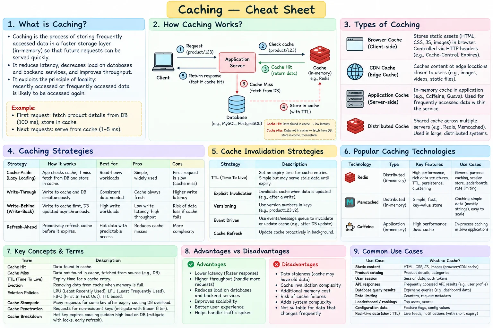

Topic · System Design Fundamentals
Caching
Serve repeated reads from faster storage to cut latency and backend load - with an explicit plan for population, expiry, invalidation, eviction, and failure.
Cheat sheet


Quick Revision
- Cache layers: browser, CDN, local (in-process), application, distributed.
- Population: cache-aside, read-through, write-through, write-behind, refresh-ahead.
- Cache-aside: the app handles misses. Read-through: the cache layer loads from the source.
- Freshness: TTL, explicit invalidation, versioned keys. Eviction: LRU / LFU.
- Every design needs a failure plan: stampede, hot keys, penetration, node loss.
Design checklist
- Requirements - read/write ratio, freshness tolerance, object size, hot working set, durability.
- Estimation -
hot entries × avg entry size × replication factor × overhead. - High-level design - app checks cache; on a miss, read DB/origin, populate cache, return.
- Deep dives - stampede, hot keys, penetration, TTL jitter, negative caching, replication, invalidation events, fail-open vs fail-closed.
Trade-offs
| Choice | Benefit | Cost / risk |
|---|---|---|
| Cache-aside | Simple; only requested data is cached | Cold-miss penalty, invalidation complexity |
| Write-through | Cache stays relatively fresh | Extra latency on every write |
| Write-behind | Low write latency, high throughput | Data loss, ordering, recovery risk |
| Local in-process cache | Lowest latency, no network hop | Duplicated memory, cross-instance inconsistency |
| Distributed cache | Shared view, independent scaling | Network hop, another distributed dependency |
Failure modes
- Stampede after a popular key expires - request coalescing / single-flight, jittered TTLs, early refresh, stale-while-revalidate.
- Repeated lookups of nonexistent keys - negative caching, Bloom filters, validation, rate limiting.
- Stale data - bounded TTL, versioned keys, write-triggered invalidation, event-driven refresh.
- Cache node fails - replicas, consistent-hash remapping, controlled origin fallback, gradual warming.
- One hot key overloads a node - replicate or split/salt the key, add an L1 cache, adaptive routing. Virtual nodes alone don't split one hot key.
Interview practice
Answer aloud, then reveal.
Microsoft (2025): single-machine cache vs distributed cache - design the distributed one.
Local caches are fastest but isolated and hard to invalidate consistently. A distributed cache uses partitioning, consistent hashing, replication, TTL/eviction, and stampede/hot-key protection.
Frequent: design a distributed cache like Redis or Memcached.
Clarify item size, read/write mix, freshness, durability. Partition with consistent hashing + virtual nodes, replicate, use cache-aside, TTL, eviction, failure fallback, and hotspot protection.